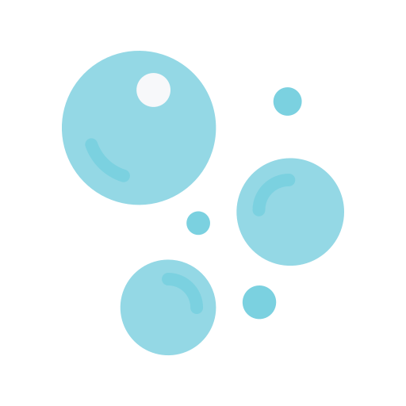

Zarezewuj
Cennik
O mnie
Kontakt

Z PASJI DO PŁYWANIA
14 LAT
DOŚWIADCZENIA
jako zawodnnik i instruktor
PŁYWALNIA
OSIR DELFIN
ul. Kacprzaka 1/3
01-211 Warszawa
ZAJĘCIA DLA
DOROSŁYCH
 OSWAJANIE
NAUKA
DOSKONALENIE
TRENING
ZAPISY NA ZAJĘCIA
OTWARTE
klak.marcin@plywajmy.pl
+48 516 792 999
INSTRUKTOR
O MNIE
Przez 12 lat swojego życia pływałem i startowałem w setkach zawodów. Był to mój sposób na życie. Moim konikiem jest styl zmienny i motylkowy.
Jestem absolwentem warszawskiego AWF-u (specjalizacja Windsurfing) i studentem Informatyki w WWSI.
Uczę pływania od 2020 roku, a w sierpniu 2022 założyłem własną szkołę pływania "KŁAK", gdzie w najlepszej atmosferze dzielę się swoją pasją do wody!
OPINIE
TO PISZĄ INNI
Opinia 1
Opinia 2
Opinia 3